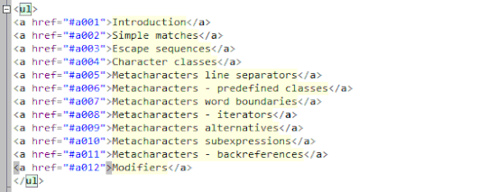

- Closing data tags
-
In the old times when html was used, people didn't always close
the data tags in the code. Due to this, it has caused a lot of problems
in code verification softwares' and it is because the program thinks that
the data is still in that one element.
Example:
<li>Text here
<li>More text here
<li>Some more text
The right way:
<li>Text here</li>
<li>More text here</li>
<li>Some more text</li>
- Never using Inline styles
-
Inline styles are useful but you should be doing the styles after you have
finished making the bulk of the website. Through this, there is no
repetition in the code that you are using. Even though it might be tempting
to add some inline coding, you will later on be changing that by making a CSS
document that holds the CSS that styles the page.
Example:
The right way:
- Where to place external data sheets
-
The link lines to the external stylesheet can technically be put anywhere,
but as many html specifications say, the CSS stylesheet links have to be
put in the head tag and nowhere else. But on the other hand, the Javascript
script file links are to be placed within the end of the body tag.
CSS stylesheet:
<head>
<title>Website title<title>
<link rel="stylesheet" type="text/css" href="path/to/file.css" />
<link rel="stylesheet" type="text/css" href="path/to/anotherFile.css" />
</head>
Javascript script file:
<p>Webpage with text</p>
<script type="text/javascript" src="path/to/file.js"> </script>
<script type="text/javascript" src="path/to/anotherFile.js"> </script>
</body>
</html>
- Validation
-
Many people think that validating your HTML is just because, but it is more
that that, it is to mainly see if there is a simple error that can make your
website not want to work. At the same time, it is to debug any problems that
are not seen in the site at first sight. So it is very important that you
validate your HTML code to make sure that there are no errors when running
the website. You can also validate CSS code in the same way. A very useful
website that can help in HTML validation is
https://validator.w3.org/
- Firebug or Chrome
-
Firebug-A Firefox plugin that provides debugging for javascript and pinpoints
elements that are interfering with paddings and margins. Similarly, Chrome
naturally already has the features of showing what the padding
and margin sizes are and the amount of pixels each of these take up.
To get Firebug, get Firefox Click here

- Lowercase Tag Names
-
Even though having the tag names being capitalized, it does not matter very
much if they are capitalized or not. All it does, is it hurt's peoples' eyes
to look at it do debug. At the same time, it can cause validation errors
when validating the HTML.
What not to do:
<DIV>
<P>Web page content</P>
</DIV>
What to do:
<div>
<p>Web page content</p>
</div>
- Usage of h1 to h6 tags
-
A lot of people who have not done a lot of HTML programming do not use
the h1 to h6 tags which are very useful when programming HTML. This is
because the h1 to h6 tags are their own individual tags that can be selected
in CSS and they already have a default style to each of them. This is
because the h1 tag is mainly used for the article title where many people
don't use it for the article title.
Example:
<h1>Article title</h1>
<h6>Piece of information</h6>
- Navigation with Unordered Lists
-
When making a navigation bar, it is better to use an unordered list because
in many websites it is possible to make horizontal and vertical navigation
bars. When using a unordered list, it is possible to do both at the same
time but they will need to have styles placed upon them to make them horizontal
or vertical oriented.
What not to do:
<div id="nav">
<a href="page1.html">Home</a>
<a href="page2.html">About</a>
<a href="page3.html">Contact</a>
</div>
What to do:
<ul id="nav">
<li><a href="page1.html">Home</a></li>
<li><a href="page2.html">About</a></li>
<li><a href="page3.html">Contact</a></li>
</ul>
- Target Internet Explorer
-
When using an IE browser that is less than IE 6, you have to import a different stylesheet
because not everything that IE 6 supports withholds to the standards to web design. So just
in case, put this small snippet of code into your pages to target IE for whichever browser
that does not do what you want it to do.
Example:
<!--[if lt IE 7]>
<link rel="stylesheet" type="text/css" href="path/to/ie.css" />
<![endif]-->
- Code editors
-
When programming in any programming language, use the best software that suits you, so why not
take that same principal with HTML and use the best editor that suits you. There are many different
HTML editors out there and some good ones are:
PC programs rated by developers
- Phase 5
- Programmer's Notepad
- SynWrite-I highly recommend this one
- PlainEdit.NET
- Notepad++
- jEdit
Mac & PC programs rated by developers
- Sublime Text 2 – The Swiss Army Knife
- Brackets - Part of Adobe Creative Suite
- Aptana Studio 3
Example of SynWrite:

- Alt text on images
-
It's extremely easy to forget this one of not putting alternate text in for an image
because we always think that the image will always load on every try; but to people who don't have the
best internet connections, it takes forever to get the image loaded-that's on why we have the alt text.
Bad example:
<img src="image.jpg">
Good example:
<img src="image.jpg" alt="Description of image">